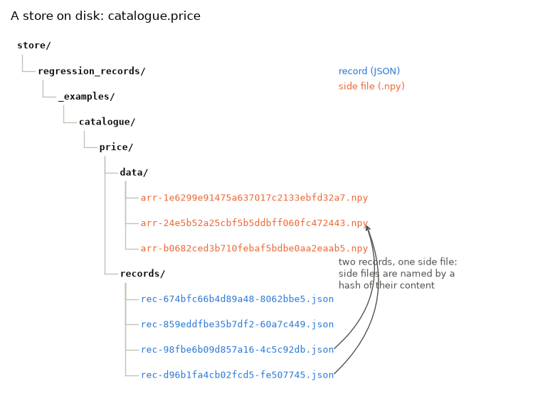

Note
Go to the end to download the full example code.
RecordStore : inspecting records on disk¶
A store is JSON in directories - grep, git diff and jq all work on it. But
there is also an API, for the times you want to walk every record the way replay
does, read a recorded value back as a Python object, find out what a function’s history
actually covers, or move records after a refactor.
Setup: where records go¶
The code under test reads its store from the REGRESSION_RECORDS_STORE environment
variable when it is imported, so the variable is set first
(record_func : recording a first call says why).
import os
import tempfile
from pathlib import Path
# In a project: REGRESSION_RECORDS_STORE=tests/regression_data in a .env file, loaded
# with python-dotenv's load_dotenv(). Here: a fresh temporary directory, empty each run.
STORE = Path(tempfile.mkdtemp(prefix="regression-records-"))
os.environ["REGRESSION_RECORDS_STORE"] = str(STORE)
print("store:", STORE)
store: /tmp/regression-records-7ik82e7s
Setup: the code under test¶
Replay imports a recorded function by module and name, so the code under test lives in
a module, catalogue, imported from regression_records._examples - support code
that ships with the package so that a page can import real code rather than define it
in a cell (record_func : recording a first call says more). In
your project, this is your own package. Its source, printed below:
Passing a RecordStore instead of a path lets several decorations share one - and
gives you the same object to query afterwards. tags attach free-form metadata to
every record a decoration writes, which is how you keep track of what a batch of
records came from.
import inspect
from regression_records._examples import catalogue
print(inspect.getsource(catalogue))
"""Tagged catalogue prices, for the gallery page ``12_inspecting_the_store``."""
from __future__ import annotations
import os
import numpy as np
from regression_records import RecordStore, record_func
# Where records go is configuration, set by whoever runs this code; never set here.
STORE = RecordStore(os.environ["REGRESSION_RECORDS_STORE"])
@record_func(STORE, tags={"suite": "pricing", "owner": "risk-team"})
def price(quantity: int, unit: float, *, currency: str = "GBP") -> dict[str, object]:
"""Return the total for ``quantity`` items at ``unit`` each, and the per-item line."""
return {
"total": quantity * unit,
"currency": currency,
"detail": np.full(quantity, unit, dtype=float),
}
store = catalogue.STORE
def show_tree(root: Path) -> None:
"""Print every file in the store, relative to its root."""
for path in sorted(root.rglob("*")):
if path.is_file():
print(" ", path.relative_to(root))
Recording is off unless switched on; this page switches it on for the whole script.
import numpy as np
from regression_records import (
FunctionIdentity,
ToleranceConfig,
compare,
enable,
replay,
)
enable()
price = catalogue.price
price(3, 1.5)
price(4, 2.0)
price(3, 2.5)
price(3, 1.5, currency="EUR")
show_tree(STORE)
regression_records/_examples/catalogue/price/data/arr-1e6299e91475a637017c2133ebfd32a7.npy
regression_records/_examples/catalogue/price/data/arr-24e5b52a25cbf5b5ddbff060fc472443.npy
regression_records/_examples/catalogue/price/data/arr-b0682ced3b710febaf5bdbe0aa2eaab5.npy
regression_records/_examples/catalogue/price/records/rec-674bfc66b4d89a48-8062bbe5.json
regression_records/_examples/catalogue/price/records/rec-859eddfbe35b7df2-60a7c449.json
regression_records/_examples/catalogue/price/records/rec-98fbe6b09d857a16-4c5c92db.json
regression_records/_examples/catalogue/price/records/rec-d96b1fa4cb02fcd5-fe507745.json
The layout¶
Each function gets a directory named after its module and qualified name. Inside it,
records/ holds one JSON file per record - named by the input hash, then the record
id - and data/ holds the side files those records reference: here the detail
arrays, as .npy.
A side file is named by a hash of its own content. price(3, 1.5) and
price(3, 1.5, currency="EUR") are two calls, so two records, but their detail
arrays are equal - so both records point at one file.
price_dir = STORE / "regression_records" / "_examples" / "catalogue" / "price"
assert price_dir == STORE.joinpath(*price.identity.path_parts)
records_dir = price_dir / "records"
data_files = sorted((price_dir / "data").iterdir())
record_texts = {p.name: p.read_text() for p in sorted(records_dir.iterdir())}
referenced_by = {
f.name: [name for name, text in record_texts.items() if f.name in text]
for f in data_files
}
assert len(record_texts) == 4 and len(data_files) == 3, "four records, three arrays"
shared = [name for name, users in referenced_by.items() if len(users) == 2]
assert len(shared) == 1, "the two equal arrays are one file"
Drawn as a tree, straight from the directory walk:
import matplotlib.pyplot as plt
def tree_rows(root: Path) -> list[tuple[int, str, Path]]:
"""Return ``(depth, name, path)`` for every entry under ``root``, depth first."""
rows = []
for path in sorted(root.rglob("*")):
rows.append((len(path.relative_to(root).parts), path.name, path))
return rows
rows = [(0, "store/", STORE), *tree_rows(STORE)]
fig, ax = plt.subplots(figsize=(7.8, 0.36 * len(rows) + 0.6))
indent, char_width = 0.32, 0.085 # in data units, for 9pt monospace on this figure
last_at_depth, row_of, end_of = {}, {}, {}
for row, (depth, name, path) in enumerate(rows):
y = -row
if depth:
x = (depth - 1) * indent + 0.08
ax.plot([x, x], [last_at_depth[depth - 1] - 0.35, y], color="#c3c2b7", lw=1)
ax.plot([x, x + indent - 0.12], [y, y], color="#c3c2b7", lw=1)
last_at_depth[depth] = y
label = name if path.is_file() or name.endswith("/") else name + "/"
color = {".json": "#2a78d6", ".npy": "#eb6834"}.get(path.suffix, "#0b0b0b")
weight = "normal" if path.is_file() else "bold"
ax.text(
depth * indent,
y,
label,
va="center",
family="monospace",
fontsize=9,
color=color,
fontweight=weight,
)
row_of[name], end_of[name] = y, depth * indent + char_width * len(label)
# The two records that reference the shared side file, joined to it.
(shared_name,) = shared
for record_name in referenced_by[shared_name]:
ax.annotate(
"",
xy=(end_of[shared_name] + 0.1, row_of[shared_name]),
xytext=(end_of[record_name] + 0.1, row_of[record_name]),
arrowprops={
"arrowstyle": "->",
"color": "#52514e",
"lw": 1,
"connectionstyle": "arc3,rad=0.35",
},
)
ax.text(
5.0,
row_of[shared_name] - 2.0,
"two records, one side file:\nside files are named by a\nhash of their content",
fontsize=9,
color="#52514e",
va="center",
)
ax.text(5.0, -1.0, "record (JSON)", color="#2a78d6", fontsize=9, va="center")
ax.text(5.0, -1.6, "side file (.npy)", color="#eb6834", fontsize=9, va="center")
ax.set_xlim(-0.1, 8.2)
ax.set_ylim(-len(rows) + 0.4, 0.8)
ax.axis("off")
ax.set_title("A store on disk: catalogue.price", loc="left")
fig.tight_layout()

Every record in the store¶
iter_record_paths() lists every record file under the store, sorted, by walking the
directory tree - so a record that no longer loads is still listed. load_record()
reads one into a RegressionRecord without loading any side file. This pair is how
replay itself walks a store.
for path in store.iter_record_paths():
record = store.load_record(path)
print(
f"{path.relative_to(STORE)}\n"
f" {record.identity.module}:{record.identity.qualname}"
f" created {record.created_at} tags={record.tags}"
)
regression_records/_examples/catalogue/price/records/rec-674bfc66b4d89a48-8062bbe5.json
regression_records._examples.catalogue:price created 2026-10-27T19:48:52.471949+00:00 tags={'owner': 'risk-team', 'suite': 'pricing'}
regression_records/_examples/catalogue/price/records/rec-859eddfbe35b7df2-60a7c449.json
regression_records._examples.catalogue:price created 2026-10-27T19:48:52.471345+00:00 tags={'owner': 'risk-team', 'suite': 'pricing'}
regression_records/_examples/catalogue/price/records/rec-98fbe6b09d857a16-4c5c92db.json
regression_records._examples.catalogue:price created 2026-10-27T19:48:52.472546+00:00 tags={'owner': 'risk-team', 'suite': 'pricing'}
regression_records/_examples/catalogue/price/records/rec-d96b1fa4cb02fcd5-fe507745.json
regression_records._examples.catalogue:price created 2026-10-27T19:48:52.470404+00:00 tags={'owner': 'risk-team', 'suite': 'pricing'}
The identity comes from the record, not from where the file sits: the directory is a filing convention, and a record stays what it says it is wherever it is copied.
One function’s records¶
The wrapper carries the identity its records are filed under, which is what the store’s methods take.
identity = price.identity
print(identity)
print()
records = store.list_records(identity)
assert len(records) == 4
print(f"{len(records)} record(s):")
for record in records:
print(
f" {record.record_id[:8]} input_hash={record.input_hash[:12]} tags={record.tags}"
)
FunctionIdentity(module='regression_records._examples.catalogue', qualname='price', kind='function', code_hash='595ca0c6e4582d89', signature="(quantity: 'int', unit: 'float', *, currency: 'str' = 'GBP') -> 'dict[str, object]'")
4 record(s):
8062bbe5 input_hash=674bfc66b4d8 tags={'owner': 'risk-team', 'suite': 'pricing'}
60a7c449 input_hash=859eddfbe35b tags={'owner': 'risk-team', 'suite': 'pricing'}
4c5c92db input_hash=98fbe6b09d85 tags={'owner': 'risk-team', 'suite': 'pricing'}
fe507745 input_hash=d96b1fa4cb02 tags={'owner': 'risk-team', 'suite': 'pricing'}
Reading a recorded value back¶
A record holds a JSON tree with references to side files; loading it is deliberately a separate step, so listing records or checking an identity does not pay for materializing every array they mention.
store.deserialization_context(identity) supplies the directory those references
resolve against.
ctx = store.deserialization_context(identity)
for record in records:
args = record.load_args(ctx)
kwargs = record.load_kwargs(ctx)
output = record.load_output(ctx)
print(
f"price(*{args}, **{kwargs}) -> total={output['total']}, detail={output['detail']}"
)
np.testing.assert_allclose(output["detail"].sum(), output["total"], rtol=1e-12)
price(*[3, 2.5], **{'currency': 'GBP'}) -> total=7.5, detail=[2.5 2.5 2.5]
price(*[4, 2.0], **{'currency': 'GBP'}) -> total=8.0, detail=[2. 2. 2. 2.]
price(*[3, 1.5], **{'currency': 'EUR'}) -> total=4.5, detail=[1.5 1.5 1.5]
price(*[3, 1.5], **{'currency': 'GBP'}) -> total=4.5, detail=[1.5 1.5 1.5]
The records of one call¶
input_hash groups the records of one call: the same function on the same
arguments. It is the leading part of each record’s filename, so those records sit
side by side. A call normally has one record; it has more when its behavior was
recorded, changed and recorded again
(RecordStore, replay : re-recording after an intended change), which is the
thing to look for.
by_call = {}
for record in records:
by_call.setdefault(record.input_hash, []).append(record.record_id[:8])
for input_hash, ids in by_call.items():
print(f" {input_hash[:12]}: {len(ids)} record(s) {ids}")
assert all(len(ids) == 1 for ids in by_call.values())
assert store.has_records(identity)
674bfc66b4d8: 1 record(s) ['8062bbe5']
859eddfbe35b: 1 record(s) ['60a7c449']
98fbe6b09d85: 1 record(s) ['4c5c92db']
d96b1fa4cb02: 1 record(s) ['fe507745']
Comparing by hand¶
compare() is a pure function, so a recorded value and a fresh one can be checked
without going near replay. This is the seam to build a custom check on - a pytest
helper, a report over a whole store, a comparison replay cannot make for you.
recorded = next(
r.load_output(ctx)
for r in records
if r.load_args(ctx) == [3, 1.5] and r.load_kwargs(ctx) == {"currency": "GBP"}
)
fresh = {"total": 4.5001, "currency": "GBP", "detail": np.full(3, 1.5)}
print(compare(recorded, fresh).summary())
print()
print(compare(recorded, fresh, ToleranceConfig(rtol=1e-3)).summary())
assert not compare(recorded, fresh).passed
assert compare(recorded, fresh, ToleranceConfig(rtol=1e-3)).passed
comparison failed with 1 diff(s):
at '$.total' (value_mismatch): 4.5001 differs from expected 4.5 beyond tolerance
comparison passed
When a function moves¶
Records are filed under module/qualname, and replay imports a function by that
recorded name. Moving a function to another module leaves its history pointing at the
old name. This is not resolved automatically - which of several moved functions a set
of records belongs to is not something a library can work out.
rename_identity does it by hand:
moved_to = FunctionIdentity(
module="pricing.engine",
qualname="price",
kind=identity.kind,
code_hash=identity.code_hash,
signature=identity.signature,
)
store.rename_identity(identity, moved_to)
show_tree(STORE)
pricing/engine/price/data/arr-1e6299e91475a637017c2133ebfd32a7.npy
pricing/engine/price/data/arr-24e5b52a25cbf5b5ddbff060fc472443.npy
pricing/engine/price/data/arr-b0682ced3b710febaf5bdbe0aa2eaab5.npy
pricing/engine/price/records/rec-674bfc66b4d89a48-8062bbe5.json
pricing/engine/price/records/rec-859eddfbe35b7df2-60a7c449.json
pricing/engine/price/records/rec-98fbe6b09d857a16-4c5c92db.json
pricing/engine/price/records/rec-d96b1fa4cb02fcd5-fe507745.json
Each moved record’s stored module and qualname are rewritten to match its new home,
so the directory and the files inside it do not disagree. The rest of the recorded
identity - kind, code_hash, signature - describes the code each record was
captured from and is left alone, so moving a function does not erase the drift warning
you would get if its implementation had also changed.
Side files are not touched: records reference them relatively, so they move with the directory and keep resolving.
moved_ctx = store.deserialization_context(moved_to)
moved = store.list_records(moved_to)
assert len(moved) == 4
for record in moved:
assert (record.identity.module, record.identity.qualname) == (
"pricing.engine",
"price",
)
print(
f" {record.identity.module}.{record.identity.qualname}",
record.load_output(moved_ctx)["total"],
)
pricing.engine.price 7.5
pricing.engine.price 8.0
pricing.engine.price 4.5
pricing.engine.price 4.5
rename_identity refuses to overwrite an existing destination, so merging two histories
is something you have to do deliberately rather than by accident.
Replay imports each record’s function by its recorded name. There is no module
pricing.engine on this page, so every moved record is not_importable - the
status that, in a real move, says the rename has not been done yet (or was done to the
wrong place).
report = replay(store)
assert report.counts()["not_importable"] == 4
print(report.counts())
print(report.failures[0].error)
{'passed': 0, 'differs': 0, 'raised': 0, 'not_importable': 4, 'not_replayable': 0, 'not_loadable': 0}
cannot import module 'pricing.engine': ModuleNotFoundError: No module named 'pricing'
Removing a record, and pruning what it leaves¶
Records are never deleted for you. Removing one is a manual act - delete its file - and
its side files stay behind in data/. prune finds data files that no record
names. It only reports by default. Deleting the price(4, 2.0) record leaves its
array unreferenced; deleting one of the two records that share an array would not.
four_items = next(r for r in moved if r.load_args(moved_ctx) == [4, 2.0])
moved_dir = STORE / "pricing" / "engine" / "price" / "records"
next(moved_dir.glob(f"*-{four_items.record_id[:8]}.json")).unlink()
unreferenced = store.prune(moved_to)
for path in unreferenced:
print("unreferenced:", path.name)
assert len(unreferenced) == 1
unreferenced: arr-1e6299e91475a637017c2133ebfd32a7.npy
dry_run=False deletes them. With no identity, prune covers the whole store.
deleted = store.prune(dry_run=False)
print(f"deleted {len(deleted)} file(s); left to prune: {store.prune()}")
assert len(deleted) == 1 and store.prune() == []
deleted 1 file(s); left to prune: []
Using it from pytest¶
To check a store in a test suite, replay it. replay_tests
(replay_tests : one pytest test per record) turns every
record into its own pytest test:
# tests/test_regressions.py
from regression_records import replay_tests
test_regressions = replay_tests("tests/regression_data")
Commit tests/regression_data/. A pull request that changes behaviour then fails
the case that moved, and one that re-records shows the changed records in its diff,
which is the point: the reviewer sees what changed, not just that something did.
Moving a store¶
Every reference inside a record is relative to that record’s own directory, so a store - or a single identity directory within it - can be moved, copied, or archived as a unit and still resolve. That is what makes committing one to a repository work.
Next: replay, replay_tests : a pricing pipeline, recorded, changed, replayed takes a realistic pipeline from record to change to replay.
Total running time of the script: (0 minutes 0.162 seconds)